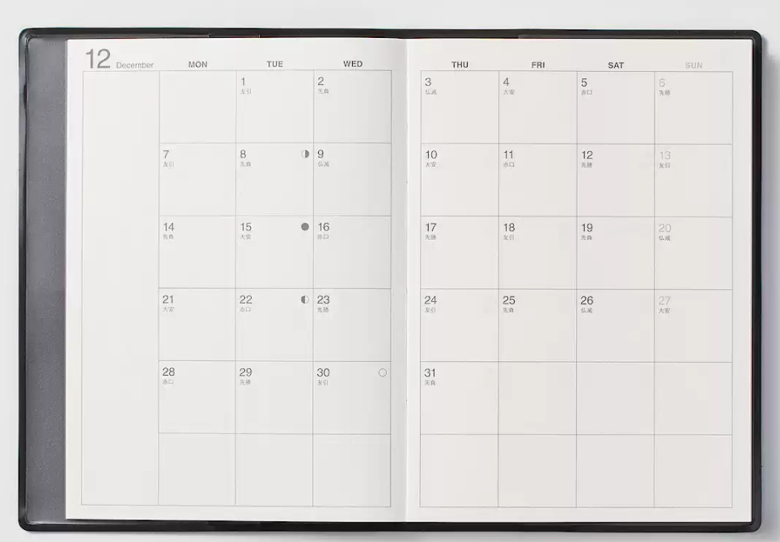
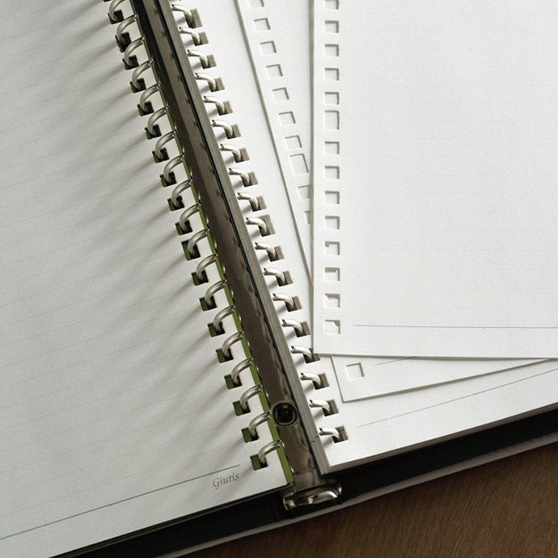
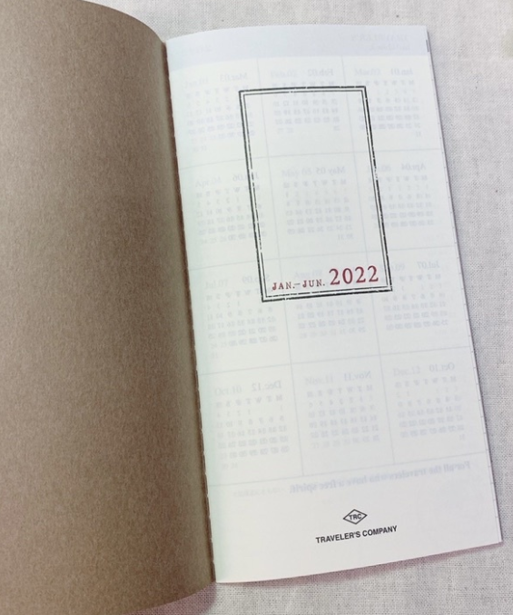

FORMAT
- 固定ページ：
- 固定ページの本を選択すると、快適な書き込みを確保するように、180 °フラットすることができます開いている任意のページで本に注意を払う必要があります。 固定ページの手帳は、ダイアリー、読書メモ、BOJUフォームのスケジュール計画などに適しています。同じブックに記録する必要のあるさまざまなカテゴリーのメモがある場合は、BOJUフォームを参照し、最初のページまたは最後のページに目次を設定することで、すばやく検索して取り出すことができます。

- ルーズリーフ：
- ルーズリーフの利点は、グループ分けや仕切りが自由にできることです。 日記をまとめておいたり、勉強のメモをまとめておいたり、持ち歩く場合は必要なページだけを取り、本をはじいた後に似たようなメモをまとめてファイリングしたりと、整理がとてもしやすいです。 また、気に入ったルーズリーフを1回選んで、後から中の空白ページを自由に埋めていくことができます。

- TN：
- TNは手帳の種類ではなく、日本の手帳ブランドが人気を博したため、同じ種類の手帳をTNと呼ぶようになったのです。TNは、固定ページとルーズリーフの両方の利点を持ちながら、それらの欠点を巧みに回避していると言えます。 TNには、同時に3～4冊の手帖のインサートを入れることができるので、自由な組み合わせでダイアリーを計画し、必要なインサートだけを取り出して外出することができます。
